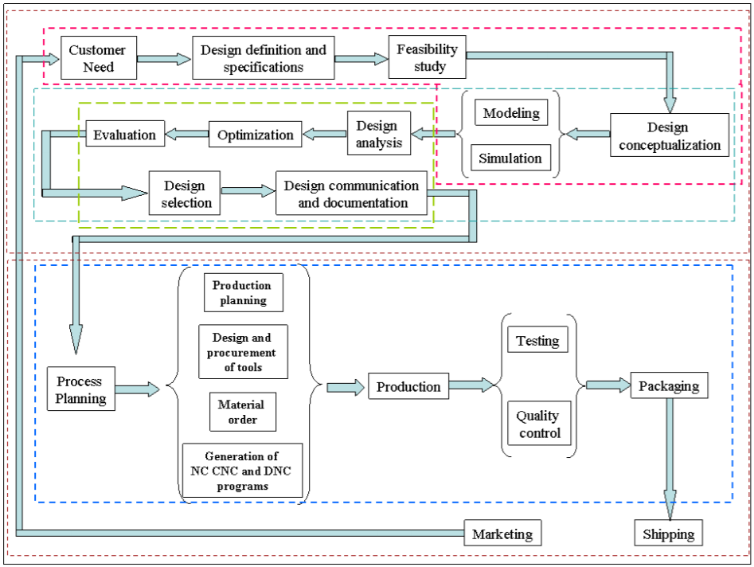

NX12 <<
Previous Next >> CH2 入門
CH1 引言
工程師現在使用 CAD、CAM 和 CAE 系統來進行自動化的設計和生產，現在這些系統每天被用在各種不同的工程任務。底下簡要說明如何使用 CAD、CAM 和 CAE 來實現產品的過程。
1.1 產品實現過程
產品實現過程可以大致分為兩個階段：設計和製造。
設計過程可收集了相關的設計信息，後可制定了設計規範。根據相關設計信息進行可行性研究，並進行詳細設計和分析。詳細設計包括設計概念，預期產品圖紙，草圖和幾何建模。分析包括應力分析，干涉檢查，運動學分析，質量特性計算和公差分析以及設計優化。
製造過程始於從生產計劃開始的車間活動，該活動使用設計過程圖並以實際產品結束。流程計劃包括生產計劃，材料採購和機器選擇等活動。在生產過程的各個階段，需要完成各種任務，例如購買新工具，NC 編程和質量檢查。流程計劃包括對產品製造中使用的所有流程的計劃。通過質量控制檢查的零件將經過功能測試，包裝，標記和運送給客戶。

上圖顯示了代表產品實現過程的圖表（Mastering CAD / CAM，由Ibrahim Zeid，McGraw Hill，2005年）
1.2 CAD / CAM 開發的簡要歷史
當前的 CAD / CAM 技術的起源可以追溯到文明古代，當時古埃及的工程師意識到了圖形通信。正交投影實踐今天是在1800年代發明的。 CAD / CAM 系統的真正開發始於 1950 年代。 CAD / CAM 在上個世紀經歷了四個主要的發展階段。
1950 年代被稱為交互式電腦圖形時代。麻省理工學院的伺服機構實驗室在三軸銑床上演示了數控（NC）的概念。發展歷程在這個時代，由於當時電腦的缺點而放慢了速度。在 1950 年代後期，開始了自動編程工具（APT）的開發，並探索了通用汽車公司互動圖形的潛力。
1960 年代是交互式電腦圖形學最關鍵的研究時期。Ivan Sutherland 開發了畫板系統，該系統演示了創建圖紙和在陰極射線管（CRT）上以交互方式進行對象交替。 CAD 一詞開始出現，「設計」一詞超越了基本的製圖概念。通用汽車宣布了他們的 DAC-1 系統和 Bell Technologies 推出了GRAPHIC 1 遠程顯示系統。
在 1970 年代期間，前十年在電腦圖形學方面的研究工作開始富有成果。按行業，政府和學術界，並且實現了交互式電腦圖形學在提高生產率方面的潛力。 1970 年代被描述為電腦製圖和專用儀器設計應用程序開始的黃金時代。國家計算機圖形協會（NCGA）成立，並且初始圖形交換規範（IGES）開始了。
在 1980 年代，新的理論和算法得到了發展，並且設計和製造的各種要素都得到了發展。主要的研發重點是擴大 CAD / CAM 系統超越了三維幾何設計，並提供了更多的工程應用。
現今 CAD / CAM 的開發側重於設計和製造中各種元素的高效，快速集成和自動化，以及新算法的開發。有許多可直接使用的商業 CAD / CAM 軟件包，它們非常易於使用並且非常友好。以下是當前市場中的一些商業軟件包。
- Solid Edge、AutoCAD、Inventor 和 TurboCAD 是一些負擔得起的CAD軟件系統。
- NX、Pro-E、CATIA 和 SolidWorks 是高端建模和設計軟體更昂貴但功能更強大的系統。這些軟體系統還具有電腦輔助的製造和工程分析功能。
- Onshape 和 Fusion 360 是建立在雲端的 CAD 軟件，可通過用戶的瀏覽器提供CAD 功能。
- ANSYS、ABAQUS、NASTRAN 和 COMSOL 是主要用於 CAE 。
1.3 CAD/CAM/CAE 的定義
1.3.1 電腦輔助設計 – CAD
CAD 是與使用電腦系統來協助設計的創建、修改、分析和優化有關的技術。 任何體現電腦圖形學的電腦程序和在設計過程中促進工程功能的應用程序都可以歸類為 CAD 軟件。
CAD 的最基本作用是定義設計的幾何形狀－機械零件、產品組裝、建築結構、電子電路、建築物佈局等。CAD 系統的最大好處是可以節省大量時間和精力。 減少因每次需要重新定義設計的幾何形狀而導致的錯誤。
1.3.2 電腦輔助製造 – CAM
CAM 技術涉及電腦系統的計畫、管理和控制，該電腦系統通過與工廠生產資源的電腦介面來的計畫、管理和控制製造操作。
CAM 最重要的領域之一是數控（NC）。 這是一種使用編程指令來控制工具機的技術，該工具機利用切削、銑削、磨削、沖壓或將原料製成成品。 CAM的另一個重要功能是在機器人編程中。
流程計劃也是電腦自動化的目標。
1.3.3 電腦輔助工程 – CAE
CAE 技術使用計算機系統來分析 CAD 創建的產品的功能，從而使設計人員可以模擬和研究產品的性能，從而可以優化和優化設計。
CAE 工具可用於許多不同類型的分析。 例如，運動學分析程序可用於確定機構中的運動路徑和連桿速度。
動態分析程序可用於確定複雜組件（例如汽車）中的載荷和位移。 最受歡迎的分析方法之一是使用有限元素方法（FEM）。 該方法可用於確定應力，變形，傳熱，磁場分佈，流體流動和其他連續場問題，而這些問題通常很難用任何其他方法解決。
1.4 教程範圍
- 第2章介紹了 NX 12 的基本知識和基本功能。
- 第3章介紹了草圖的概念。它描述瞭如何創建草圖以及給出幾何和尺寸約束。
- 第4章零件的實際設計和建模。如何使用特徵，例如參考特徵、掃掠特徵和原始特徵。
- 第5章如何從零件模型轉成工程圖。在本章中，將示範如何通過添加視圖，標註零件圖形的尺寸以及修改圖形中的各種屬性（例如文本大小、箭頭大小和公差）來創建圖紙。
- 第6章介紹了裝配建模的概念及其術語。它描述了 TopDown 建模和 Bottom-Up 建模。我們將使用自下而上的模型進行組裝組件變成產品。
- 第7章介紹了自由格式建模。將演示建模曲線和平滑表面的方法。
- 第8章簡要介紹了NX 12中用於有限元分析的設計仿真。
- 第9章介紹刀具路徑的生成、驗證和仿真，以創建CNC（計算機數字代碼），以從多軸甚至先進的CNC機床生產設計零件。
- 每章中使用的示例和練習題經過精心設計，最終將在本章中進行匯總。 由於這獨特功能，您應該保存在每一章中創建的所有模型。
NX12 <<
Previous Next >> CH2 入門